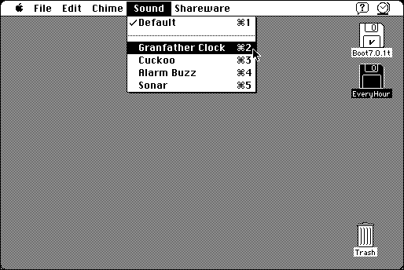

Download
EveryHour.zip (82K) EveryHour 1.1f repackaged into a zipped hfs disk image and checksum file. The disk image can be mounted with Mini vMac.
EveryHour.sit (74K) EveryHour 1.1f in the original format.
copyright: Jerry Du, DragonOne
mod date: Aug 15, 1994
license: shareware
last known url
(gone)
A small application that runs in the background and chimes on the hour and half hour like a grandfather clock.

If you find these downloads useful, please consider helping the Gryphel Project, which hosts them.
Here are the md5 checksums for the downloads, signed with Gryphel Key 5:
--------- GRY SIGNED TEXT --------- f3b6649c3578612b3e05ce043fffa121 EveryHour.zip 382e12d9ba7fe057a0e0cd4b5f233329 EveryHour.sit ------- BEGIN GRY SIGNATURE ------- Gry/4Xa8CFcUzxdN/ClA4FS7wob4cmCek3losp2ekwpzzrnYvBkgqSJDUQNvQ1Kr r0iJGs80/kq5eIcZmVqNdvfgfX+ap8xXTEErBzE29gMB4EcOXi2wA/c5mpOX579f +jyw8AmMcSNMjnvZeWXlnlf4l+8eLqYGrrKw0wvoiQhnC2F1095K6F2lD0p3XeWE -------- END GRY SIGNATURE --------